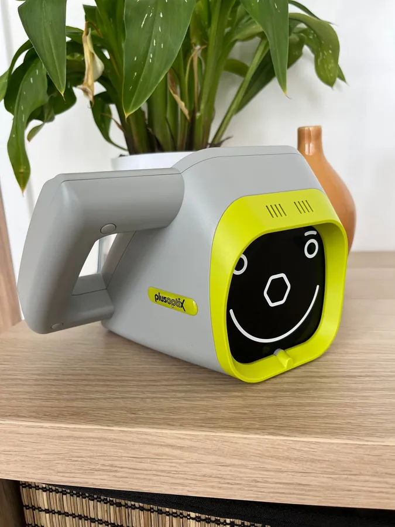

Dépistage visuel de la petite enfance (9 mois)
Le premier bilan visuel est recommandé vers 9 mois. Il permet de repérer tôt :
- un strabisme ;
- un défaut visuel : hypermétropie, myopie, astigmatisme ;
- une différence de vision entre les deux yeux ;
et d'écarter tout signe de malvoyance.
Mesurer l'acuité visuelle avant la parole
Chez le nourrisson, l'acuité visuelle est évaluée par la technique du regard préférentiel, avec les cartes d'acuité BéBé Vision Tropique. Chaque carte présente un motif de cercles concentriques sur un fond gris uniforme. D'une carte à l'autre, les cercles sont de plus en plus fins.
Un bébé dirige spontanément son regard vers un motif structuré plutôt que vers une surface uniforme : tant qu'il perçoit les cercles, il les regarde. L'orthoptiste observe ces réactions et détermine le motif le plus fin perçu.
Réalisé sur chaque œil séparément, ce test permet d'estimer l'acuité visuelle et de dépister un œil plus faible que l'autre, signe possible d'une amblyopie.
Pourquoi dépister tôt ?
La vision se construit pendant les premières années de vie. Un trouble visuel non repéré, comme un œil qui voit moins bien que l'autre (amblyopie), se rééduque d'autant mieux qu'il est pris en charge tôt.
Or un jeune enfant ne se plaint pas : il ne sait pas qu'il voit mal, et certains troubles ne se voient pas de l'extérieur. D'où l'intérêt d'un dépistage systématique : avec un matériel adapté, les signes de malvoyance ou d'autres troubles visuels sont repérables dès 9 mois.
Dépistage à 3–4 ans et 5–6 ans
- 3–4 ans, aux alentours de l'entrée à l'école maternelle : écarter tout défaut visuel, amblyopie ou strabisme qui gênerait le développement visuel normal ;
- 5–6 ans : repérer un défaut visuel qui pourrait peser sur les apprentissages à venir, avant l'entrée au CP et l'apprentissage de la lecture.
Ces bilans sont complémentaires : un seul ne suffit pas. La vision évolue très régulièrement à cet âge, car l'enfant grandit et son œil aussi. C'est d'autant plus vrai en cas d'antécédents visuels dans la famille.
Un bilan est possible à tout âge en cas de doute, sans attendre ces étapes.
Les signes qui doivent faire consulter
- un œil qui louche (vers l'intérieur) ou qui diverge (part vers l'extérieur), même de temps en temps ;
- un enfant qui oriente mal son regard, qui fixe dans le vide ou ne regarde pas ce qu'on lui montre ;
- une tête souvent penchée ou tournée ;
- des yeux plissés, des objets regardés de très près ;
- des yeux qui larmoient ou une gêne à la lumière ;
- un enfant qui se cogne ou tombe souvent ;
- des antécédents familiaux de strabisme, de lunettes fortes, ou une naissance prématurée.
À ne pas laisser attendre : un reflet blanc dans la pupille (sur une photo au flash par exemple) ou un œil rouge et douloureux nécessitent de consulter rapidement un ophtalmologiste ou un médecin.
Comment se passe le bilan ?

Le dépistage est un examen clinique rigoureux. Les tests sont choisis en fonction de l'âge de l'enfant et de ses capacités de réponse :
- la réfraction (hypermétropie, myopie, astigmatisme) est mesurée avec un réfractomètre pédiatrique Plusoptix. La mesure se fait à un mètre, sans contact et en moins d'une seconde, pendant que l'enfant regarde le visage souriant de l'appareil. Elle renseigne aussi sur la taille des pupilles et l'alignement des yeux ;
- l'acuité visuelle est évaluée avec des tests adaptés à l'âge : regard préférentiel chez le nourrisson, puis tests d'images ou de symboles, et tests de lettres lorsque l'enfant les connaît ;
- la vision binoculaire et l'oculomotricité sont examinées pour dépister un strabisme, même intermittent.
L'examen ne nécessite donc ni que l'enfant sache lire, ni qu'il réponde oralement. Le parent reste présent tout au long du bilan.
Si un trouble est repéré, un compte rendu est adressé au médecin. Si une consultation chez un ophtalmologiste est nécessaire, le cabinet se charge de trouver un rendez-vous rapide.
Questions fréquentes
Faut-il une ordonnance ?
Oui, une prescription du pédiatre ou du médecin généraliste permet le remboursement par l'Assurance maladie.
Mon enfant ne parle pas encore ou ne connaît pas les lettres : comment mesurer sa vue ?
Avant l'acquisition du langage, l'acuité visuelle peut être évaluée par la technique du regard préférentiel (cartes BéBé Vision Tropique) et la réfraction mesurée à distance avec le Plusoptix, sans aucune réponse de l'enfant. Les tests d'images, de symboles ou de lettres sont utilisés dès que l'enfant en est capable.
Que faut-il apporter ?
Le carnet de santé, la carte Vitale, l'attestation de mutuelle et tout autre document utile au parcours de soin (ordonnance, comptes rendus, ordonnances de lunettes).